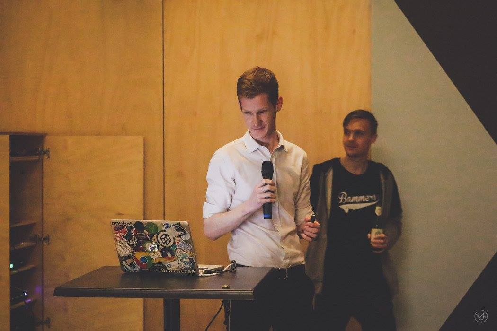
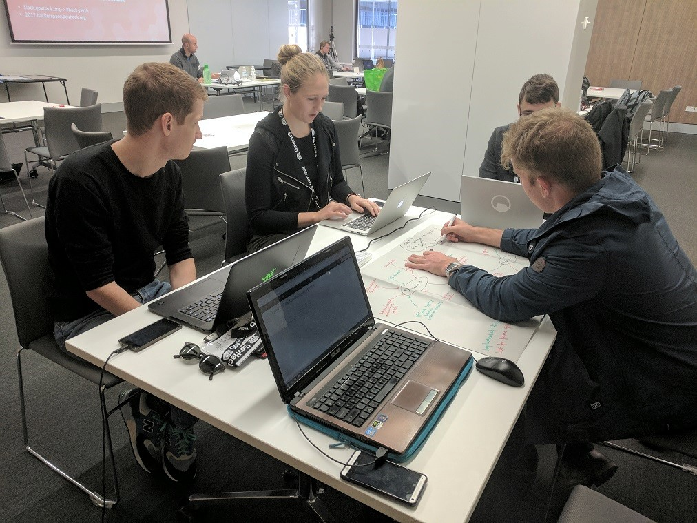
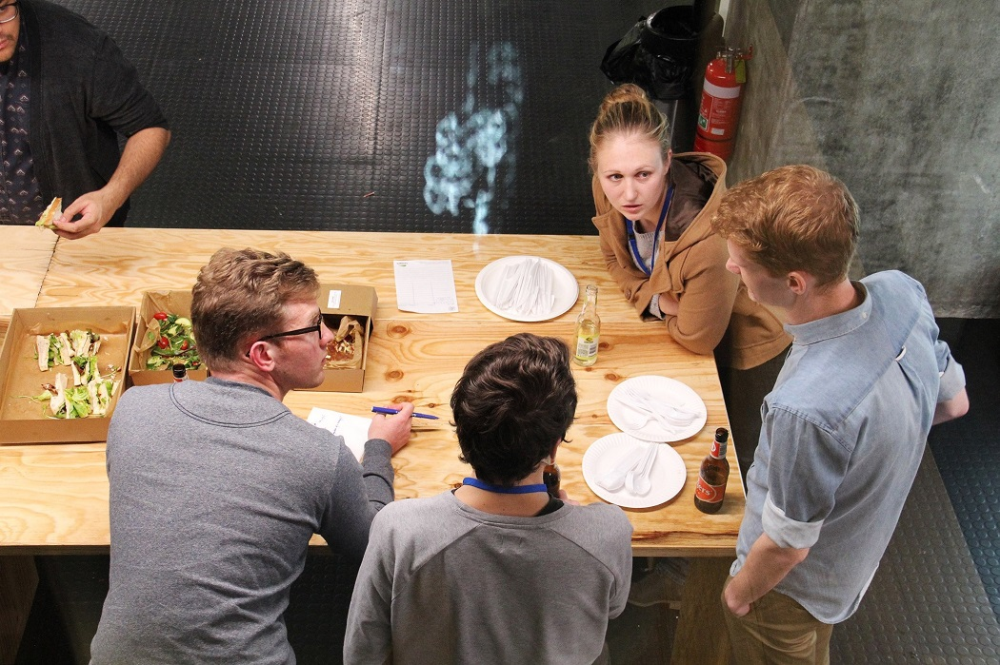

Macklin Hartley
Web Developer &
User Experience Analyst
I am a Web Developer and User Experience Analyst from Perth, Western Australia. I have a passion for creating simple, accessible and exciting user experiences. In my 5 years of experience, I've had the pleasure of contributing to large development teams and consulted among a wide range of organisations.
Skills
- HTML5
- CSS3
- JavaScript
- KnockoutJS
- AngularJS
- Bootstrap
- Responsive CSS
- User Experience Design
- C#
- ASP.NET MVC
- Entity Framework
- Microsoft Azure
- AutoFac Dependency Injection
- GIT & TFS
- Domain Driven Design
- Build Automation
- Automated Deployments
- Agile Delivery Experience
- Problem solving
Employment
Cash Converters September 2016 - Present
- Worked on large-scale projects to rebuild and enhance online services
- Integrated 2FA into an online bank statement download service
- Ran presentations to senior management on the benefits of web accessibility
- Integrated live chat system into online loan application platform
NEC Australia September 2012
- Developed an online portal for the Department of Water to manage water resources and licensing
- Lead user-experience and accessibility analyst for online platform
- Added change tracking feature to online retention and disposal application
- Enhanced error handling for Word Document import service
- Assisted in developing responsive stylesheets for mobile-first volunteer application for St John Ambulance
"Crushed It"
2010-2011

Other Experience
Web Accessibility In Practice Presentation for Localhost Meetup
I gave a presentation to the Localhost PER meetup in August of 2016 on practical methods to design and test for accessibility from my experiences as an applications developer.
GovHack 2017 Collaborate Metrics
At GovHack 2017 I worked with a group of friends to build a metric for collaboration based off the IP Government Open Data initiative. We used records of successful patent applications with more than one applicant in order to build a 'collaboration score' and mapped the scores to administrative regions across Australia.
On October 14th 2017, our project won the Marketplaces Hack award at the National GovHack Red Carpet Awards.
GovHack 2016 Street Shark
At GovHack 2016 I worked with a small team to analyse crime location statistics from Sydney to build a predictive model that could be displayed using the Google Maps API.
HealthHack 2015 UVBuddy Sun Exposure App
I helped conceptualise and prototype an application for the Telethon Kids Institute intended to direct users in correct UV exposure.
Telethon Kids Hackathon IThermal - Thermal Imaging Data Collection App
With NEC and the Telethon Kids Institute, I worked in a team on a project aimed at utilising thermal cameras to detect brown-fat percentages in children.
Certification
Microsoft Certified Software Developer Web Applications
This certificate covers the basics of developing Web Applications using HTML5 with JavaScript and CSS3. It also explores the web toolkit provided by Microsoft, including ASP.NET, MVC, Web Services, and Microsoft Azure.
Education
Bachelor of Computer Science Curtin University
During my time at Curtin University I fostered the skills required to communicate and manage my time effectively. I graduated from Curtin University at the end of 2012.